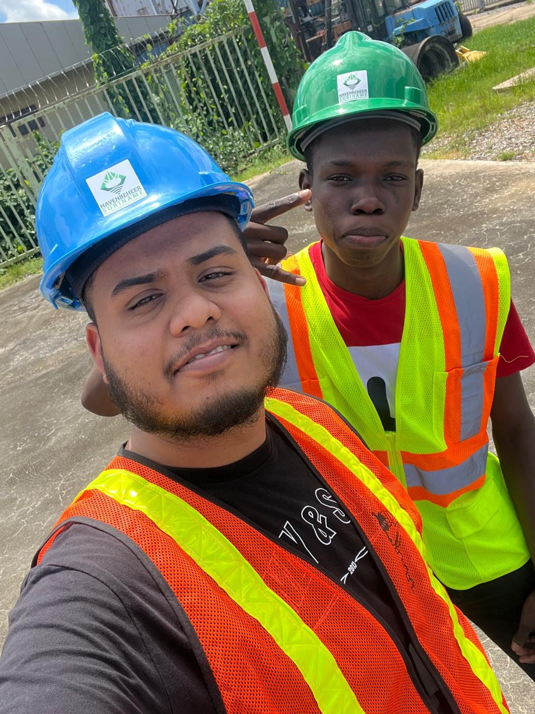

Kernvaardigheden & Expertise
IT Infrastructuur
- Netwerkbeheer en configuratie (o.a. Cisco routers)
- Monitoringstools: Unifi, Wazuh, Zabbix
- Datacenter Analyst & Support IT Technician
- Basiskennis van beveiliging (camera- en alarmsystemen)
- Computerreparatie en onderhoud
Software & Development
- Websitebeheer met WordPress en XAMPP (PHP, MySQL)
- Servicedeskbeheer (o.a. Spiceworks) [cite: 12]
- Office-producten: Word, Excel, PowerPoint, Sharepoint, Teams, Publisher
- Projectplanning en documentatie
- Grafisch ontwerp (Canva, Filmora)
Muziek & Studio
- Instrumenten: Keyboard, Harmonium, Tabla, Dholak etc.
- Muzikant sinds 2015 (5 certificaten van erkende instellingen)
- Studio operator bij VK Studio
Talen
- Nederlands - Vloeiend
- Hindi - Vloeiend (gediplomeerd)
- Engels - Goed
Overige Vaardigheden
- Zwemmer met zwemdiploma (2018)
- Event organisatie & assistentie (SAATHI & KRMI)